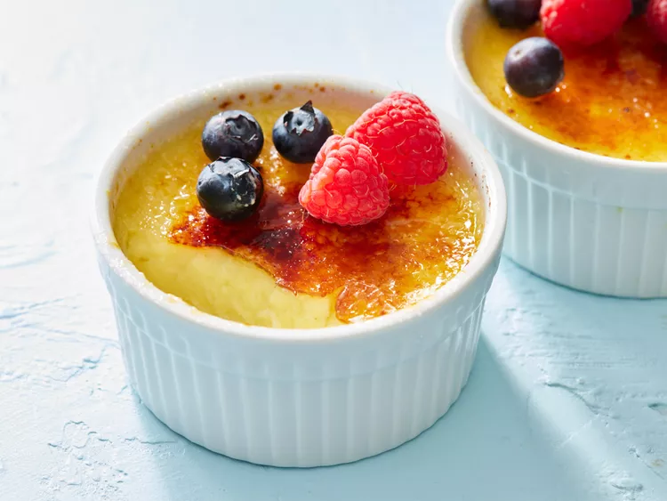

This easy crème brûlée recipe is rich and creamy. It should still be jiggly in the center when you remove it from the oven. To serve, use a spoon to crack the crisp sugar topping open to reveal the creamy dessert underneath.